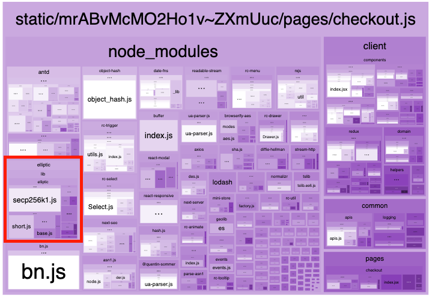

Product
Product
How We Cut GrabFood.com’s Page JavaScript Asset Sizes by 3x

Introduction
Every week, GrabFood.com’s cloud infrastructure serves over >1TB network egress and 175 million requests, which increased our costs. To minimise cloud costs, we had to look at optimising (and reducing) GrabFood.com’s bundle size.
Any reduction in bundle size helps with:
- Faster site loads! (especially for locations with lower mobile broadband speeds)
- Cost savings for users: Less data required for each site load
- Cost savings for Grab: Less network egress required to serve users
- Faster build times: Fewer dependencies -> less code for webpack to bundle -> faster builds
- Smaller builds: Fewer dependencies -> less code -> smaller builds
After applying the 7 webpack bundle optimisations, we were able to yield the following improvements:
- 7% faster page load time from 2600ms to 2400ms
- 66% faster JS static asset load time from 180ms to 60ms
- 3x smaller JS static assets from 750KB to 250KB
- 1.5x less network egress from 1800GB to 1200GB
- 20% less for CloudFront costs from $1750 to $1400
- 1.4x smaller bundle from 40MB to 27MB
- 3.6x faster build time from ~2000s to ~550s
Solution
One of the biggest factors influencing bundle size is dependencies. As mentioned earlier, fewer dependencies mean fewer lines of code to compile, which result in a smaller bundle size. Thus, to optimise GrabFood.com’s bundle size, we had to look into our dependencies.
Tldr;
Jump to Step C: Reducing your Dependencies to see the 7 strategies we used to cut down our bundle size.
Step A: Identify Your Dependencies
In this step, we need to ask ourselves ‘what are our largest dependencies?’. We used the webpack-bundle-analyzer to inspect GrabFood.com’s bundles. This gave us an overview of all our dependencies and we could easily see which bundle assets were the largest.

- For Next.js, you should use @next/bundle-analyze instead.
- Bundle analysis output allows us to easily inspect what’s in our bundle.
What to look out for:
I: Large dependencies (fairly obvious, because the box size will be large)
II: Duplicate dependencies (same library that is bundled multiple times across different assets)
III: Dependencies that look like they don’t belong (e.g. Why is ‘elliptic’ in my frontend bundle?)

What to avoid:
- Isolating dependencies that are very small (e.g. <20kb). Not worth focusing on this due to very meagre returns.
- E.g. Business logic like your React code
- E.g. Small node dependencies
Step B: Investigate the Usage of Your Dependencies (Where are my Dependencies Used?)
In this step, we are trying to answer this question: “Given a dependency, which files and features are making use of it?”.

There are two broad approaches that can be used to identify how our dependencies are used:
I: Top-down approach: “Where does our project use dependency X?”
- Conceptually identify which feature(s) requires the use of dependency X.
- E.g. Given that we have ‘jwt-simple’ as a dependency, which set of features in my project requires JWT encoding/decoding?
II: Bottom-up approach: “How did dependency X get used in my project?”
- Trace dependencies by manually tracing
import()andrequire()statements - Alternatively, use dependency visualisation tools such as dependency-cruiser to identify file interdependencies. Note that output can quickly get noisy for any non-trivial project, so use it for inspecting small groups of files (e.g. single domains).
Our recommendation is to use a mix of both Top-down and Bottom-up approaches to identify and isolate dependencies.
Dos:
- Be methodical when tracing dependencies: Use a document to track your progress as you manually trace inter-file dependencies.
- Use dependency visualisation tools like dependency-cruiser to quickly view a given file’s dependencies.
- Consult Dr. Google if you get stuck somewhere, especially if the dependencies are buried deep in a dependency tree i.e. non-1st-degree dependencies (e.g. “Why webpack includes elliptic bn.js modules in bundle”)
Don’ts:
- Stick to a single approach - Know when to switch between Top-down and Bottom-up approaches to narrow down the search space.
Step C: Reducing Your Dependencies
Now that you know what your largest dependencies are and where they are used, the next step is figuring out how you can shrink your dependencies.

Here are 7 strategies that you can use to reduce your dependencies:
- Lazy load large dependencies and less-used dependencies
- Unify instances of duplicate modules
- Use libraries that are exported in ES Modules format
- Replace libraries whose features are already available on the Browser Web API
- Avoid large dependencies by changing your technical approach
- Avoid using node dependencies or libraries that require node dependencies
- Optimise your external dependencies
Note: These strategies have been listed in ascending order of difficulty - focus on the easy wins first üôÇ
1. Lazy Load Large Dependencies and Less-used Dependencies

Similar to how lazy loading is used to break down large React pages to improve page performance, we can also lazy load libraries that are rarely used, or are not immediately used until prior to certain user actions.
Before:
const crypto = require(‘crypto’)
const computeHash = (value, secret) => {
return crypto.createHmac(value, secret)
}
After:
const computeHash = async (value, secret) => {
const crypto = await import(‘crypto’)
return crypto.createHmac(value, secret)
}
Example:
- Scenario: Use of Anti-abuse library prior to sensitive API calls
- Action: Instead of bundling the anti-abuse library together with the main page asset, we opted to lazy load the library only when we needed to use it (i.e. load the library just before making certain sensitive API calls).
- Results: Saved 400KB on the main page asset.
Notes:
- Any form of lazy loading will incur some latency on the user, since the asset must be loaded with XMLHttpRequest.
2. Unify Instances of Duplicate Modules

If you see the same dependency appearing in multiple assets, consider unifying these duplicate dependencies under a single entrypoint.
Before:
// ComponentOne.jsx
import GrabMaps from ‘grab-maps’
// ComponentTwo.jsx
import GrabMaps, { Marker } from ‘grab-maps’
After:
// grabMapsImportFn.js
const grabMapsImportFn = () => import(‘grab-maps’)
// ComponentOne.tsx
const grabMaps = await grabMapsImportFn()
const GrabMaps = grabMaps.default
// ComponentTwo.tsx
const grabMaps = await grabMapsImportFn()
const GrabMaps = grabMaps.default
const Marker = grabMaps.Marker
Example:
- Scenario: Duplicate ‘grab-maps’ dependencies in bundle
- Action: We observed that we were bundling the same ‘grab-maps’ dependency in 4 different assets so we refactored the application to use a single entrypoint, ensuring that we only bundled one instance of ‘grab-maps’.
- Results: Saved 2MB on total bundle size.
Notes:
- Alternative approach: Manually define a new cacheGroup to target a specific module (see more) with ‘enforce:true’, in order to force webpack to always create a separate chunk for the module. Useful for cases where the single dependency is very large (i.e. >100KB), or when asynchronously loading a module isn’t an option.
- Certain libraries that appear in multiple assets (e.g. antd) should not be mistaken as identical dependencies. You can verify this by inspecting each module with one another. If the contents are different, then webpack has already done its job of tree-shaking the dependency and only importing code used by our code.
- Webpack relies on the
import()statement to identify that a given module is to be explicitly bundled as a separate chunk (see more).
3. Use Libraries that are Exported in ES Modules Format

- If a given library has a variant with an ES Module distribution, use that variant instead.
- ES Modules allows webpack to perform tree-shaking automatically, allowing you to save on your bundle size because unused library code is not bundled.
- Use bundlephobia to quickly ascertain if a given library is tree-shakeable (e.g. ‘lodash-es’ vs ‘lodash’)
Before:
import { get } from ‘lodash’
After:
import { get } from ‘lodash-es’
Example:
- Use Case: Using Lodash utilities
- Action: Instead of using the standard ‘lodash’ library, you can swap it out with ‘lodash-es’, which is bundled using ES Modules and is functionally equivalent.
- Results: Saved 0KB - We were already directly importing individual Lodash functions (e.g. ‚Äòlodash/get‚Äô), therefore importing only the code we need. Still, ES Modules is a more convenient way to go about this üëç.
Notes:
- Alternative approach: Use babel plugins (e.g. ‘babel-plugin-transform-imports’) to transform your import statements at build time to selectively import specific code for a given library.
4. Replace Libraries whose Features are Already Available on the Browser Web API

If you are relying on libraries for functionality that is available on the Web API, you should revise your implementation to leverage on the Web API, allowing you to skip certain libraries when bundling, thus saving on bundle size.
Before:
import axios from ‘axios’
const getEndpointData = async () => {
const response = await axios.get(‘/some-endpoint’)
return response
}
After:
const getEndpointData = async () => {
const response = await fetch(‘/some-endpoint’)
return response
}
Example:
- Use Case: Replacing axios with
fetch()in the anti-abuse library - Action: We observed that our anti-abuse library was relying on axios to make web requests. Since our web app is only targeting modern browsers - most of which support
fetch()(with the notable exception of IE) - we refactored the library’s code to usefetch()exclusively. - Results: Saved 15KB on anti-abuse library size.
5. Avoid Large Dependencies by Changing your Technical Approach

If it is acceptable to change your technical approach, we can avoid using certain dependencies altogether.
Before:
import jwt from ‘jwt-simple’
const encodeCookieData = (data) => {
const result = jwt.encode(data, ‘some-secret’)
return result
}
After:
const encodeCookieData = (data) => {
const result = JSON.stringify(data)
return result
}
Example:
- Scenario: Encoding for browser cookie persistence
- Action: As we needed to store certain user preferences in the user’s browser, we previously opted to use JWT encoding; this involved signing JWTs on the client side, which has a hard dependency on ‘crypto’. We revised the implementation to use plain JSON encoding instead, removing the need for ‘crypto’.
- Results: Saved 250KB per page asset, 13MB in total bundle size.
6. Avoid Using Node Dependencies or Libraries that Require Node Dependencies

You should not need to use node-related dependencies, unless your application relies on a node dependency directly or indirectly.
Examples of node dependencies: ‘Buffer’, ‘crypto’, ‘https’ (see more)
Before:
import jwt from ‘jsonwebtoken’
const decodeJwt = async (value) => {
const result = await new Promise((resolve) => {
jwt.verify(token, 'some-secret', (err, decoded) => resolve(decoded))
})
return result
}
After:
import jwt_decode from ‘jwt-decode’
const decodeJwt = (value) => {
const result = jwt_decode(value)
return result
}
Example:
- Scenario: Decoding JWTs on the client side
- Action: In terms of JWT usage on the client side, we only need to decode JWTs - we do not need any logic related to encoding JWTs. Therefore, we can opt to use libraries that perform just decoding (e.g. ‘jwt-decode’) instead of libraries (e.g. ‘jsonwebtoken’) that performs the full suite of JWT-related operations (e.g. signing, verifying).
- Results: Same as in Point 5: Example. (i.e. no need to decode JWTs anymore, since we aren’t using JWT encoding for browser cookie persistence)
7. Optimise your External Dependencies

We can do a deep-dive into our dependencies to identify possible size optimisations by applying all the aforementioned techniques. If your size optimisation changes get accepted, regardless of whether it‚Äôs publicly (e.g. GitHub) or privately hosted (own company library), it‚Äôs a win-win for everybody! ü•≥
Example:
- Scenario: Creating custom ‘node-forge’ builds for our Anti-abuse library
- Action: Our Anti-abuse library only uses certain features of ‘node-forge’. Thankfully, the ‘node-forge’ maintainers have provided an easy way to make custom builds that only bundle selective features (see more).
- Results: Saved 85KB in Anti-abuse library size and reduced bundle size for all other dependent projects.
Step D: Verify that You have Modified the Dependencies

So, you’ve found some opportunities for major bundle size savings, that’s great!
But as always, it’s best to be methodical to measure the impact of your changes, and to make sure no features have been broken.
- Perform your code changes
- Build the project again and open the bundle analysis report
- Verify the state of a given dependency
- Deleted dependency - you should not be able to find the dependency
- Lazy-loaded dependency - you should see the dependency bundled as a separate chunk
- Non-duplicated dependency - you should only see a single chunk for the non-duplicated dependency
- Run tests to make sure you didn’t break anything (i.e. unit tests, manual tests)
Other Considerations
Preventive Measures
- Periodically monitor your bundle size to identify increases in bundle size
- Periodically monitor your site load times to identify increases in site load times
Webpack Configuration Options
- Disable bundling node modules with ‘node: false’
- Only if your project doesn’t already include libraries that rely on node modules.
- Allows for fast detection when someone tries to use a library that requires node modules, as the build will fail
- Experiment with ‘cacheGroups’
- Most default configurations of webpack do a pretty good job of identifying and bundling the most commonly used dependencies into a single chunk (usually called vendor.js)
- You can experiment with webpack optimisation options to see if you get better results
- Experiment with
import()‘Magic Comments’- You may experiment with import() magic comments to modify the behaviour of specific
import()statements, although the default setting will do just fine for most cases.
- You may experiment with import() magic comments to modify the behaviour of specific
If you can’t remove the dependency:
- For all dependencies that must be used, it’s probably best to lazy load all of them so you won’t block the page’s initial rendering (see more).
Conclusion

{kind=link}
To summarise, here’s how you can go about this business of reducing your bundle size.
Namely…
- Identify Your Dependencies
- Investigate the Usage of Your Dependencies
- Reduce Your Dependencies
- Verify that You have Modified the Dependencies
And by using these 7 strategies…
- Lazy load large dependencies and less-used dependencies
- Unify instance of duplicate modules
- Use libraries that are exported in ES Modules format
- Replace libraries whose features are already available on the Browser Web API
- Avoid large dependencies by changing your technical approach
- Avoid using node dependencies
- Optimise your external dependencies
You can have…
- Faster page load time (smaller individual pages)
- Smaller bundle (fewer dependencies)
- Lower network egress costs (smaller assets)
- Faster builds (fewer dependencies to handle)
Now armed with this information, may your eyes be keen, your bundles be lean, your sites be fast, and your cloud costs be low! üöÄ ‚úåÔ∏è
Special thanks to Han Wu, Melvin Lee, Yanye Li, and Shujuan Cheong for proofreading this article. üôÇ
Join us
Grab is a leading superapp in Southeast Asia, providing everyday services that matter to consumers. More than just a ride-hailing and food delivery app, Grab offers a wide range of on-demand services in the region, including mobility, food, package and grocery delivery services, mobile payments, and financial services across over 400 cities in eight countries.
Powered by technology and driven by heart, our mission is to drive Southeast Asia forward by creating economic empowerment for everyone. If this mission speaks to you, join our team today!